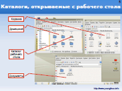
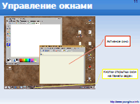
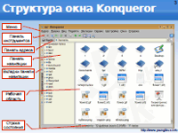
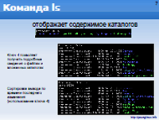
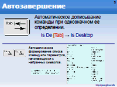
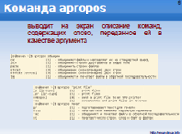
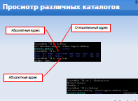
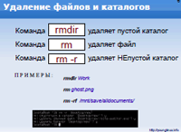
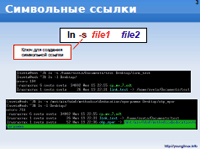
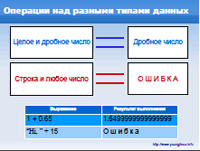

Среда рабочего стола KDE (pdf, 10 слайдов, 1.4 Mb) Слайды: заголовок, что означает КDE, вид рабочего стола, изменение фонового изображения, каталоги, главная панель, добавление апплетов, центр управления KDE, выводы и вопросы. |
 |
Структура окон приложений (pdf, 14 слайдов, 1.3 Mb) Слайды: заголовок, теория окон, примеры, структура окна, нестандартный интерфейс, заголовок окна, кнопки управления окном, строка меню, панель инструментов, строка состояния, рабочая область и полосы прокрутки, настройка интерфейса, управление окнами, выводы и вопросы. |
 |
Konqueror – файловый менеджер KDE (pdf, 14 слайдов, 2 Mb) Слайды: заголовок, многообразие файловых менеджеров, структура окна Konqueror, назначение кнопок панели инструментов, виды рабочей области, панель навигации, способы копирования и перемещения файлов и папок, браузер, выводы и вопросы. |
 |
|  | Параметры команд bash-оболочки Linux (pdf, 11 слайдов, 150 Kb) Слайды: заголовок, структура команды, команда cal, вывод календаря, использование ключей, команды echo и ls, аргументы ls, команда sleep, вопросы и практическая работа. |
|  | Как работать в командной строке Linux (pdf, 9 слайдов, 160 Kb)Слайды: заголовок, прерывание выполняющейся команды, примеры прерываний, история команд, автозавершение, удаление, ввод данных в файл и вывод из файла, вопросы, практическая работа. |
|  | Документация Linux (pdf, 8 слайдов, 260 Kb) Слайды: заголовок, man-документы и их просмотр, info-страницы, структура maan-страниц, команды apropos и man -k, практическая работа. |
|  | Абсолютная и относительная адресация. Команда cd (pdf, 9 слайдов, 130 Kb) Слайды: заголовок, адресация, относительная адресация, адресация через домашний каталог, примеры просмотра различных каталогов, команда cd, автозавершение, вопросы, практическая работа. |
|  | Операции с файлами в командной строке Linux (pdf, 8 слайдов, 130 Kb) Слайды: заголовок, изменение файловой структуры, cp - копирование, mv - перемещение и переименование, создание файлов и каталогов, удаление файлов и каталогов, вопросы, практическая работа. |
|  | Создание ссылок в Linux (pdf, 6 слайдов, 130 Kb) Слайды: заголовок, команда для создания ссылок: ln, символьные ссылки, практическая работа, вопросы, выводы. |
Сборник презентаций по теме "Основы программирования на Python" (rar, 15 презентаций, 1.7 Mb) Презентации: "Языки программирования, этапы их развития. Интерпретация и компиляция.", "Введение в Python", "Дзэн Питона", "Переменные и данные в языке программирования Python", "Логические выражения", "Ветвление в программе. Инструкция if.", "Множественное ветвление. Инструкция if-elif-else", "Цикл while", "Ввод данных с клавиатуры", "Последовательности: строки", "Последовательности: списки", "Введение в словари", "Цикл for", "Программирование функций", "Параметры и аргументы функций. Локальные и глобальные переменные". |
 |